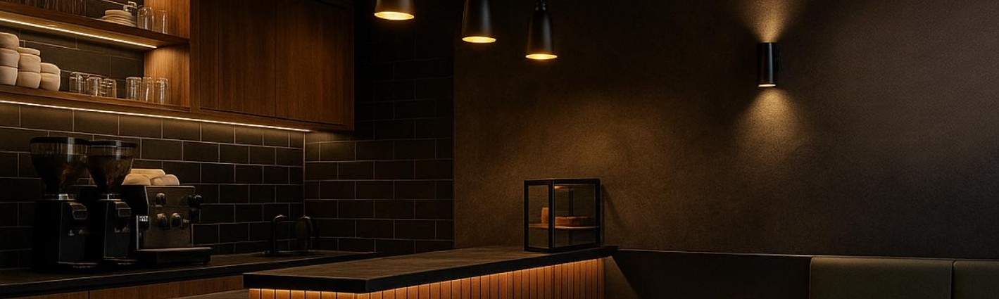
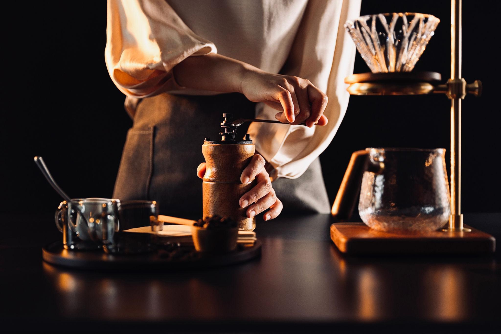
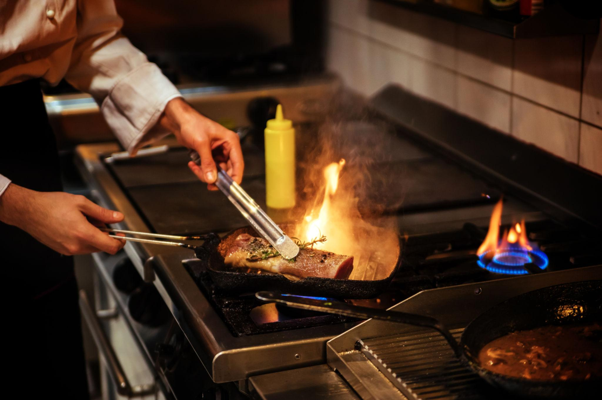
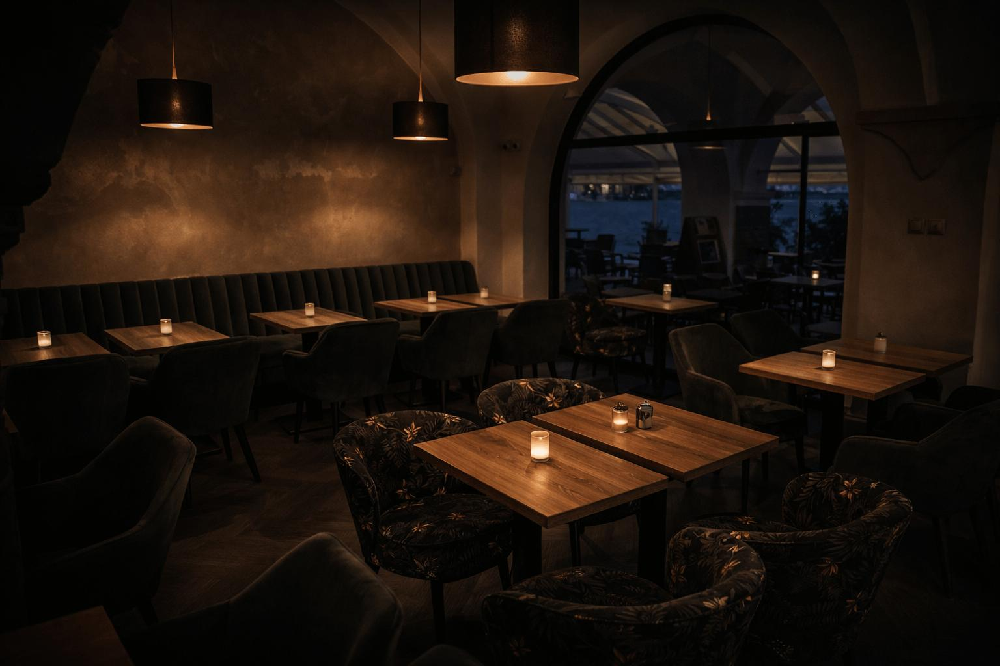

Welcome to De Melon Cafe, where elegance meets authentic French cuisine. We are dedicated to creating unforgettable dining experiences with every visit. Our chefs prepare each dish using premium ingredients and timeless French recipes. From handcrafted coffee to gourmet meals, every bite is made with passion and precision. Our luxurious ambiance offers the perfect setting for relaxing, celebrating, and connecting. Every detail, from presentation to service, reflects our commitment to excellence. We believe that exceptional food deserves exceptional hospitality. Whether you're here for breakfast, lunch, dinner, or coffee, every moment is special. Experience rich flavors, refined elegance, and warm hospitality in every visit. Discover the true essence of premium dining only at De Melon Cafe.

What started as a dream has grown into a place where flavor meets elegance. Our chefs combine timeless recipes with the finest ingredients. Every meal is prepared to delight the senses and create lasting memories. At De Melon Cafe, every guest becomes part of our story.
Step into an elegant space designed for comfort, style, and unforgettable moments. Our premium ambiance perfectly complements every meal and handcrafted beverage. Exceptional service, refined interiors, and exquisite flavors define every visit. Experience the true essence of luxury dining at De Melon Cafe.


Savor every bite, crafted with premium ingredients and timeless French flavors. Relax in our elegant dining space designed for comfort and memorable moments. From the first taste to the last, every dish is prepared with passion and care. Enjoy exceptional food, warm hospitality, and a truly luxurious dining experience.